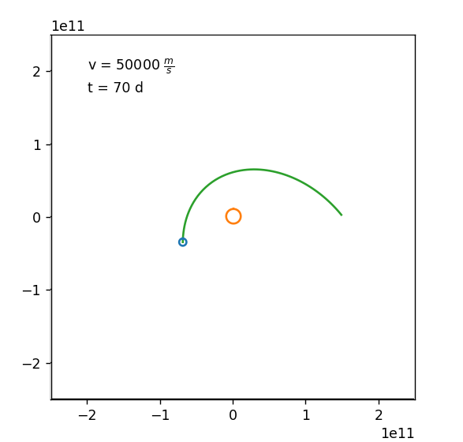
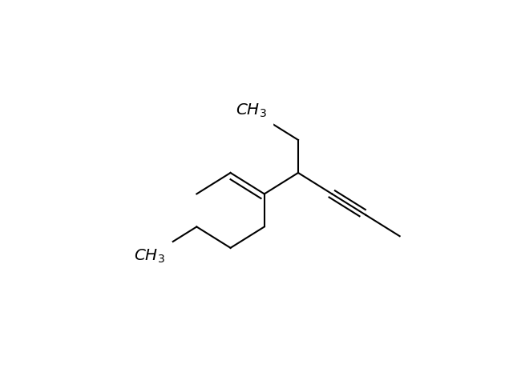

Projects
| Name | Language | Topic | |
|---|---|---|---|
| Avmath | Python | A library for mathematic purposes including features of arithmetics, analysis and linear algebra. | |
|  | PhyKep | Python | A simulation of the earth's orbit and demonstration of the laws of Kepler. |

|
Polynomdivision | Python | Step by step polynomial division for a portable calculator. |
| Physical regressions | Python | Important physical regressions. | |
|  | Orgacreator | Python | Organic molecule plotter |
View all projects on github.com.